Redes LAN, WLAN y
Tecnologías PAN
Investigación académica sobre fundamentos, arquitecturas
y parámetros de desempeño
Santiago Hurtado · Camila Puin · Daniel Espitia
Universidad Pedagógica y Tecnológica de Colombia
Facultad de Ingeniería — Escuela de Ingeniería de Sistemas y Computación
Asignatura: Comunicaciones · 2026
Ruta de la presentación
- Contextualización — qué son LAN, WLAN y PAN
- Fundamentos técnicos — medios, multiplexación, acceso al medio
- Arquitectura y protocolos — componentes, topologías, tramas
- Parámetros de desempeño — velocidad, alcance, latencia, seguridad
- Aplicaciones y escenarios — cuadro comparativo y decisión técnica
- Tendencias — Ethernet Terabit, Wi-Fi 7, BLE 6.0, Matter
01
Contextualización
Clasificación de redes por alcance geográfico
Las redes se clasifican por su alcance geográfico
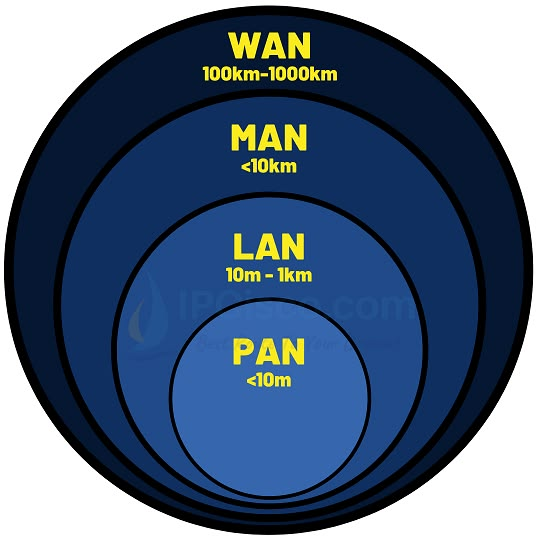
Figura 6. Clasificación por alcance geográfico
- PAN — 1 a 10 m (Bluetooth, Zigbee)
- LAN — 10 m a 1 km (Ethernet, Wi-Fi)
- MAN — hasta 10 km (fibra, microondas)
- WAN — regional a global (satélite, fibra submarina)
Cada tecnología resolvió un problema específico
| Tecnología | Década | Problema que resolvió |
|---|
| Ethernet (IEEE 802.3) | 1970s | Interconexión de estaciones fijas con alta velocidad y baja latencia |
| Wi-Fi (IEEE 802.11) | 1990s | Eliminar cableado rígido y costos, brindando movilidad |
| Bluetooth (IEEE 802.15.1) | 1990s | Reemplazar cables de periféricos con enlace de corto alcance y bajo costo |
| Zigbee (IEEE 802.15.4) | 2000s | Conectar cientos de sensores IoT con ultra bajo consumo y topología en malla |
02
Fundamentos Técnicos
Medios de transmisión, multiplexación y acceso al medio
Medios guiados ofrecen mayor rendimiento; los no guiados, movilidad
Medios guiados
- Par trenzado (UTP/STP)
- Fibra óptica (monomodo / multimodo)
- Altas tasas, baja latencia, inmunidad a interferencias
Medios no guiados
- Radiofrecuencia: 2,4 GHz, 5 GHz, 6 GHz
- Flexibilidad y movilidad
- Sensibles a atenuación, desvanecimiento y contención espectral
Tabla 1 del documento: PAN usa inalámbrico; LAN combina cobre, fibra y RF; MAN/WAN escalan a fibra óptica y satélite.
Técnicas de multiplexación optimizan el uso del espectro
| Técnica | Uso principal | Descripción clave |
|---|
| OFDM | WLAN (802.11a/g/n/ac) | Subportadoras ortogonales contra desvanecimiento multicamino |
| OFDMA | Wi-Fi 6/7 | Asignación dinámica de subportadoras a múltiples usuarios |
| FHSS | Bluetooth | Salto rápido entre 79 canales de 1 MHz |
| DSSS | 802.11b, Zigbee | Ensanchamiento con códigos pseudoaleatorios |
CSMA/CD detecta colisiones; CSMA/CA las evita
- CSMA/CD — Ethernet cableado semi-dúplex: detecta variaciones de voltaje y aplica backoff exponencial
- CSMA/CA — WLAN y Zigbee: escucha previa + temporizadores + tramas RTS/CTS
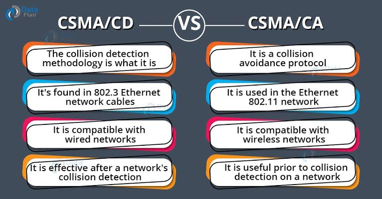
Figura 7. Comparación CSMA/CD vs CSMA/CA (DataFlare)
Los switches Ethernet emplean dos modalidades de reenvío
Store-and-Forward
- Recibe trama completa
- Verifica CRC antes de reenviar
- Mayor latencia, pero no propaga errores
Cut-Through
- Reenvía tras leer MAC destino
- Latencia ultrabaja (< 1 ms)
- Puede transmitir tramas con errores
Se diferencian de la conmutación de circuitos (PSTN, canal dedicado) y conmutación por etiquetas (MPLS/ATM, celdas de 53 bytes).
03
Arquitectura y Protocolos
Componentes, topologías, tramas y diseño
La trama Ethernet encapsula datos en campos estrictamente definidos
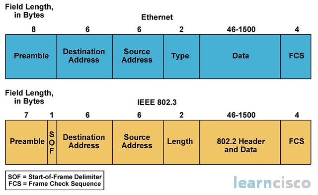
Figura 1. Estructura comparativa de las tramas Ethernet estándar (IEEE 802.3)
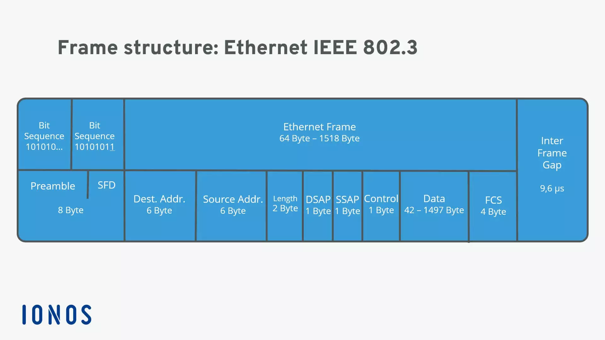
Figura 2. Detalle de campos y subcapas de la trama IEEE 802.3
Las tramas inalámbricas adaptan su estructura a cada estándar
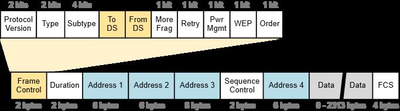
Figura 3. Trama IEEE 802.11 (Wi-Fi) — hasta 4 campos de direccionamiento
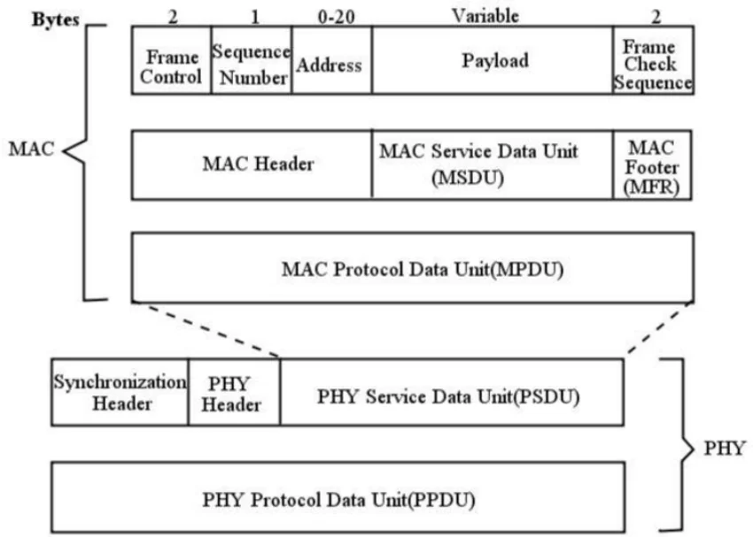
Figura 5. Trama de datos y capas PHY/MAC en IEEE 802.15.4 (Zigbee)
Cada tecnología adopta topologías distintas según su propósito
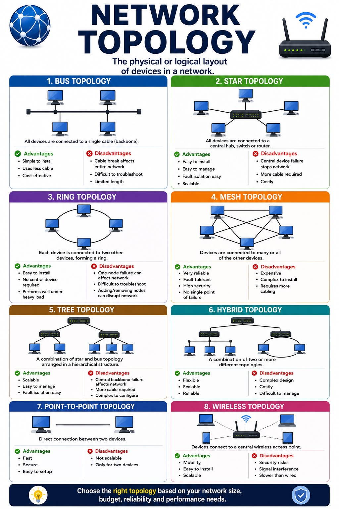
Figura 8. Principales topologías de red físicas y lógicas
Bluetooth organiza piconets; Zigbee soporta malla autorreparable
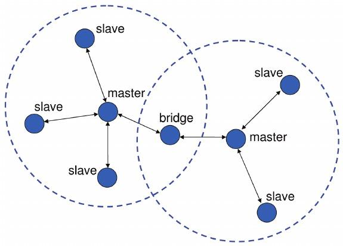
Figura 4. Piconet (1 maestro + 7 esclavos) y Scatternet Bluetooth
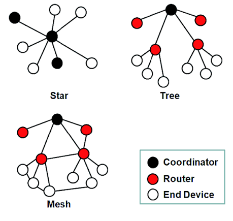
Topologías Zigbee: Estrella, Árbol y Malla con roles ZC, ZR, ZED
Tres organismos regulan la estandarización de estas tecnologías
| Organismo | Tecnología | Estándares clave | Alcance |
|---|
| IEEE 802.3 WG |
Ethernet |
802.3, 802.3u/ab/ae, 802.3df-2024, P802.3dj |
PHY, MAC, cobre/fibra hasta escala Terabit |
| IEEE 802.11 WG |
WLAN / Wi-Fi |
802.11a/b/g/n/ac, 802.11ax (Wi-Fi 6), 802.11be (Wi-Fi 7) |
PHY y MAC en 2,4 / 5 / 6 GHz |
| Bluetooth SIG |
Bluetooth |
Core v2.1+EDR, v4.0 (BLE), v5.4, v6.0 |
Marca, perfiles, banda base, BLE, seguridad |
| CSA + IEEE 802.15 |
Zigbee |
802.15.4 (PHY/MAC), Zigbee PRO, Zigbee 3.0, Matter |
IEEE: capas 1-2; CSA: NWK, APS, seguridad |
Tabla 3. Organismos de estandarización, normas asignadas y alcance técnico
04
Parámetros de Desempeño
Velocidad, alcance, latencia y seguridad
La velocidad varía en órdenes de magnitud entre tecnologías
| Tecnología | Velocidad nominal | Observación |
|---|
| Ethernet | 10 Mbps → 800 Gbps | IEEE 802.3df-2024 para centros de datos |
| Wi-Fi | 11 Mbps → 46 Gbps | Wi-Fi 7 con 320 MHz y 4096-QAM |
| Bluetooth | 1–3 Mbps (Classic/BLE) | Prioriza bajo consumo sobre ancho de banda |
| Zigbee | 250 kbps (2,4 GHz) | Optimizada para telemetría en ráfagas |
Ethernet domina en latencia; las PAN priorizan eficiencia energética
Alcance
- Ethernet: 100 m (cobre), km (fibra)
- Wi-Fi: 30–100 m interior
- Bluetooth: ~10 m (Clase 2)
- Zigbee: 10–100 m (extensible en malla)
Latencia
- Ethernet: < 1 ms (cut-through)
- Wi-Fi: 1–30 ms (< 10 ms en Wi-Fi 6/7)
- Bluetooth: 5–10 ms (Classic)
- Zigbee: 15–40 ms (incrementa por saltos)
Cada estándar implementa mecanismos de seguridad específicos
| Tecnología | Mecanismos de seguridad |
|---|
| Ethernet | VLANs (802.1Q), control de acceso 802.1X, MACsec |
| Wi-Fi | WPA2 / WPA3 (SAE, PMF, AES-CCMP, forward secrecy) |
| Bluetooth | LE Secure Connections (ECDH P-256), salto adaptativo AFH |
| Zigbee | AES-128 CCM*, install codes, Trust Center, claves jerárquicas |
Zigbee 3.0 resuelve la vulnerabilidad de la clave de enlace por defecto mediante install codes únicos por dispositivo.
Bluetooth Classic y BLE sirven propósitos complementarios
| Parámetro | Bluetooth Classic | BLE |
|---|
| Estándar | IEEE 802.15.1 / Core v2.1+EDR | Core 4.0+ / v5.x / v6.0 |
| Propósito | Audio y datos continuos | Ráfagas cortas, ultra bajo consumo |
| Canales RF | 79 canales de 1 MHz | 40 canales de 2 MHz |
| Consumo | Moderado (recarga frecuente) | Meses/años con pila de botón |
| Casos de uso | Auriculares, altavoces, periféricos | Monitores de salud, sensores IoT |
Tabla 4. Comparativa Bluetooth Classic vs BLE (Forouzan [1], Bluetooth SIG [6])
05
Aplicaciones y Escenarios
Coexistencia en 2,4 GHz y selección de tecnología
Wi-Fi, Bluetooth y Zigbee coexisten en la banda saturada de 2,4 GHz
- Bluetooth AFH: excluye canales con contención Wi-Fi del mapa de saltos
- Zigbee: selecciona canales ortogonales (15, 20, 25, 26) en los vacíos entre canales Wi-Fi
- Gateway híbrido: traduce tramas PAN a paquetes IP sobre Ethernet/Wi-Fi
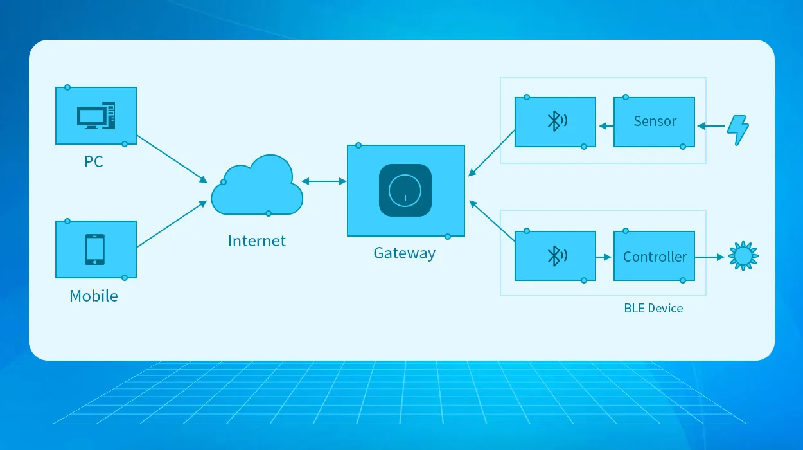
Figura 11. Esquema de arquitectura de red híbrida e interoperable
Las piconets Bluetooth se interconectan formando scatternets
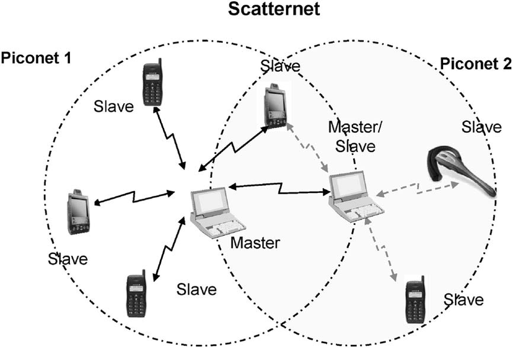
Figura 10. Arquitectura de Piconet y Scatternet en redes Bluetooth
Un nodo bridge participa en dos piconets simultáneamente, alternando roles maestro/esclavo mediante TDMA/FHSS.
La selección de tecnología depende del escenario de aplicación
| Escenario | Requerimiento crítico | Tecnología | Justificación |
|---|
| Servidor de BD corporativo | Ancho de banda extremo, latencia nula | Ethernet (10G+ / Fibra) | Capacidad dedicada sin interferencias RF |
| Campus universitario | Movilidad, densidad media/alta | Wi-Fi 5 / Wi-Fi 6 | Infraestructura flexible sin cablear nodos |
| Auriculares inalámbricos | Bajo consumo, enlace punto a punto | Bluetooth Classic / BLE | Diseñado para PAN y perfiles de audio |
| 200 sensores en fábrica | Años de batería, malla extensa | Zigbee (802.15.4) | Ultra bajo consumo + malla self-healing |
Tabla 6. Matriz de decisión técnica para selección de tecnologías
06
Tendencias y Evolución
Ethernet Terabit, Wi-Fi 7, BLE 6.0 y Matter
Todas las tecnologías evolucionan hacia mayor rendimiento e integración
Ethernet
- 802.3df-2024: 400G/800G ratificado
- P802.3dj: camino a 1,6 Tbps
- Modulación PAM4/PAM8 + DSP avanzado
Wi-Fi 7
- Banda de 6 GHz + canales de 320 MHz
- 4096-QAM (mayor densidad espectral)
- MLO: agregación en 2,4 + 5 + 6 GHz
Bluetooth
- BLE 6.0: Channel Sounding para localización de alta precisión
- Consumo energético mínimo mantenido
Zigbee e IoT
- Zigbee 3.0: AES-128 CCM* + install codes
- Matter: protocolo unificado de la CSA
- Funciona sobre Thread (802.15.4) y Wi-Fi/Ethernet
Cuadro comparativo integral — LAN vs PAN
| Criterio | Ethernet | Wi-Fi | Bluetooth | Zigbee |
|---|
| Estándar | IEEE 802.3 | IEEE 802.11 | IEEE 802.15.1 | IEEE 802.15.4 |
| Velocidad | 10M – 800G | 11M – 46G | 1–3 Mbps | 250 kbps |
| Alcance | 100m / km | 30–100 m | ~10 m | 10–100 m (malla) |
| Latencia | < 1 ms | 1–30 ms | 5–10 ms | 15–40 ms |
| Consumo | Alto | Mod./Alto | Mod./Ultra bajo | Ultra bajo |
| Acceso | Full-Duplex | CSMA/CA | TDMA/FHSS | CSMA/CA |
| Topología | Estrella | BSS/ESS | Piconet/Mesh | Malla/Estrella |
| Seguridad | 802.1X, MACsec | WPA3 | ECDH P-256 | AES-128 CCM* |
Tabla 5. Cuadro comparativo integral (Fuente: especificaciones IEEE [1]-[9])
Conclusiones
- Ethernet es el referente en rendimiento, estabilidad y capacidad para redes LAN cableadas
- WLAN extiende la flexibilidad de las LAN al ámbito inalámbrico con movilidad continua
- Bluetooth resuelve el enlace corto para periféricos y audio personal
- Zigbee ofrece una plataforma robusta, escalable y de bajo consumo para IoT y sensorización en malla
La selección de la infraestructura adecuada exige analizar el ancho de banda, la topología, la latencia, la densidad de dispositivos y las restricciones energéticas del proyecto.
Referencias bibliográficas
- B. A. Forouzan, Data Communications and Networking, 5th ed., McGraw-Hill, 2013.
- W. Stallings, Data and Computer Communications, 10th ed., Pearson, 2014.
- A. S. Tanenbaum & D. J. Wetherall, Computer Networks, 5th ed., Pearson, 2011.
- IEEE, IEEE Std 802.3df-2024 (400G/800G), Mar. 2024.
- IEEE, IEEE Std 802.11be-2024 (EHT / Wi-Fi 7), en desarrollo.
- Bluetooth SIG, Bluetooth Core Specification, v5.4 / v6.0, 2024–2025.
- CSA, Zigbee Specification, rev. 23 / Zigbee 3.0, 2023.
- IEEE, IEEE Std 802.11ac-2013 (VHT).
- IEEE, IEEE Std 802.11ax-2021 (HE WLAN).
Preguntas
Santiago Hurtado · Camila Puin · Daniel Espitia
UPTC · Ingeniería de Sistemas · Comunicaciones · 2026